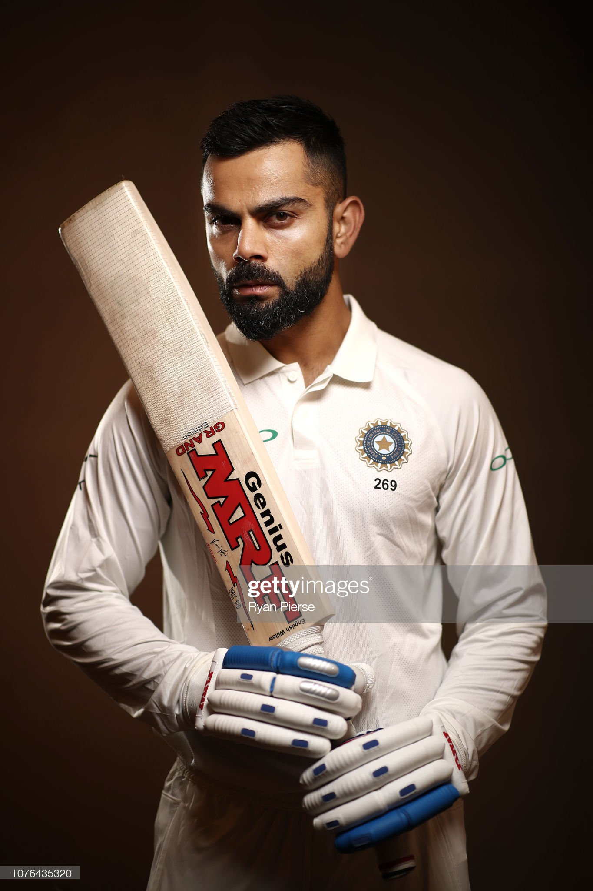

Virat Kohli, the former Captain of the Indian cricket team, is one of the world's best batsmen. He was born on 5th November 1988 in Delhi, India.
Virat Kohli
Indian Cricketer

Biography
India has given to the world many a great cricketer but perhaps none as ambitious as Virat Kohli. To meet his ambition, Kohli employed the technical assiduousness of Sachin Tendulkar and fitness that was in the league of top athletes in the world, not just cricketers. As a result, Kohli became the most consistent all-format accumulator of his time, making jaw-dropping chases look easy, and finding, in his own words, the safest possible way to score runs. Plenty of them.
This ambition transferred seamlessly to his captaincy: he demanded more than ever of his bowlers especially the quick ones, often sacrificed a batsman for bowling depth, and led India to a long stay at No. 1 in Test rankings and a first-ever series win in Australia. He is well on his way to end up as India's most successful Test captain./p>
Barring one in Bangladesh, Kohli scored Test hundreds in and against every country he played. He absolutely smashed records for number of matches taken to reach eight, nine, ten and eleven thousand ODI runs. He was a genuine threat to Sachin Tendulkar's record of 49 ODI and 51 Test hundreds.
An Under-19 world Cup-winning captain, when he burst onto the scene, Kohli was a precocious talent with a cover drive to kill for. He was destined to be India's next big batsman as the Tendulkar era began to retire, but Kohli wanted to be more: a cricketer whom the opposition would be in awe of, a cricketer whose presence would raise the intensity of the contest. He lived every ball, competed each moment, and made sure he had the fitness and strength to do so. He was widely credited for changing the fitness culture in Indian cricket, introducing endurance tests as a criterion for selection.
Kohli was quite simply India's most powerful captain. Centre of every marketing campaign for Indian cricket, he also happened to lead at a time when the BCCI was run by interim administrators who knew better than to draw the ire of Indian cricket's biggest star. There was never any cause to doubt his intent: to do things that will win matches for India, which they did plenty under him.
Read more about Virat Kohli“I always dream of holding the bat and winning the games for India.That was my inspiration to take up cricket”